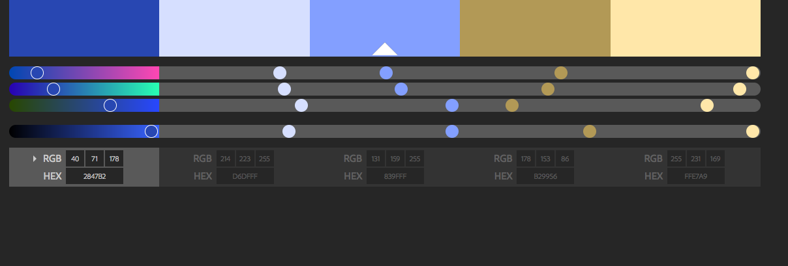

This image is of the color sheet Marc plans on using. If you'd like to make changes, please contact him.
Services
We provide comprehensive, computer assisted eye exams, which include the screening of glaucoma and cataracts, the diagnosis and the treatment of ocular disease and injury. Our doctors are trained to provide complete contact lens services including astigmatic and bifocal contact lenses. Also ask our doctors about co-management for laser and cataract surgeries. Our friendly staff will also assist you in frame styling to complement your lifestyle. Outside prescriptions are always welcome.
Types of Payment Accepted
We accept cash, personal checks, American Express®, MasterCard®, Visa®, and Discover®.
Facilities and Equipment
FACILITIES AND EQUIPMENT :
We have a large, modern practice with state-of-the-art diagnostic equipment. We have an in-office Laboratory, so we are able to provide one-hour service on most prescriptions. We carry a large selection of frames - over 2000 designer frames including Calvin Klein, Silhouette, Chanel, Fendi, Giorgio Armani, Christian Dior, Oakley, Ray Ban, Maui Jim, Marchon, DKNY, Nautica, Kazuo Kawasaki, Accuflex and many more.
Languages Spoken
Our staff speaks English, Chinese, Spanish, Vietnamese, and Filipino.